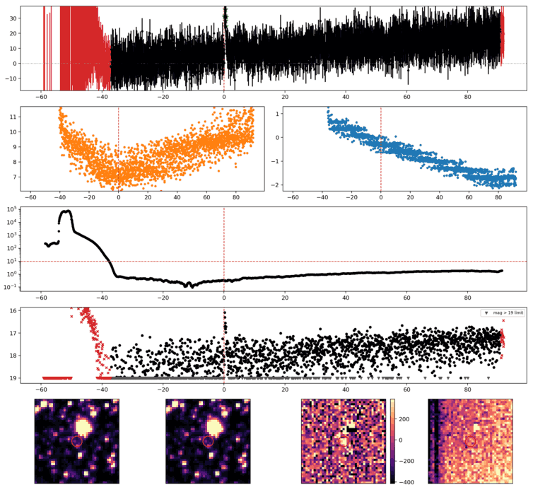
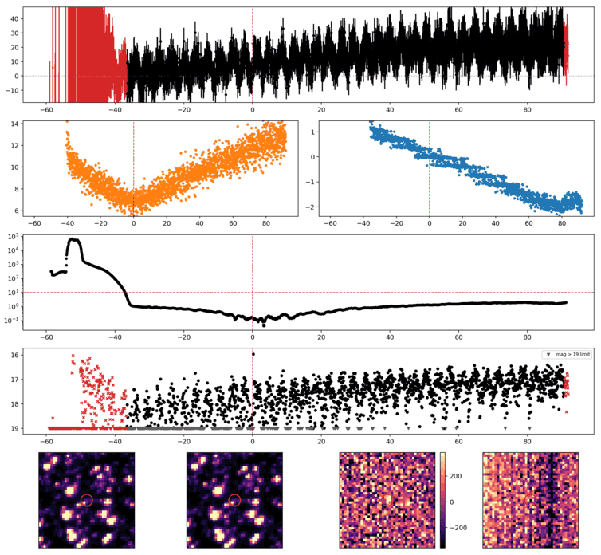
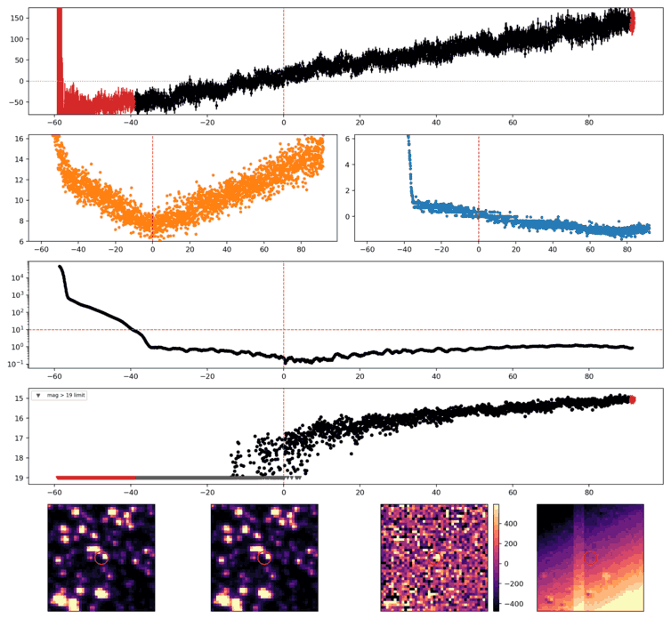
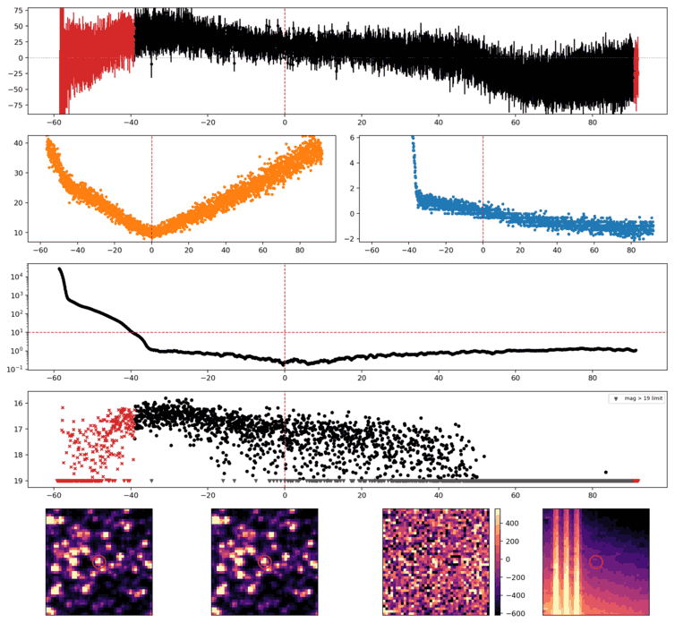
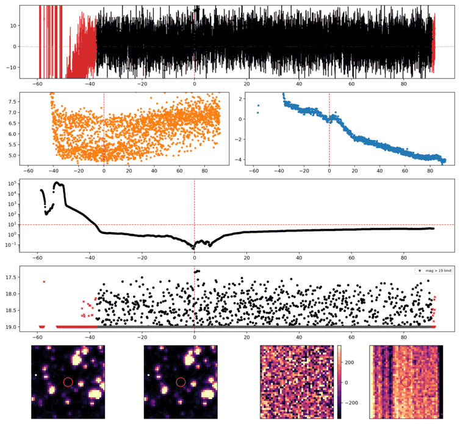

Search centered on refined position (273.1048578, -69.9157206 deg). Gaia coordinates are at J2016.0; proper motions are shown, without epoch propagation. A positional match does not change the candidate flags.
| Source ID / catalog entry | Separation (arcsec) | RA (deg) | Dec (deg) | G (mag) | BP (mag) | RP (mag) | Parallax ± error (mas) | PM RA* ± error (mas/yr) | PM Dec ± error (mas/yr) | RUWE | Variability |
|---|---|---|---|---|---|---|---|---|---|---|---|
| 6432334955989272960 | 2.727 | 273.1052550 | -69.9164657 | 18.693 | 20.705 | 17.349 | 6.353 ± 0.155 | -3.104 ± 0.118 | 0.482 ± 0.148 | 0.984 | NOT_AVAILABLE |
Retrieved 2026-10-09T18:24:04.785611+00:00

Search centered on refined position (285.3600092, -65.6642285 deg). Gaia coordinates are at J2016.0; proper motions are shown, without epoch propagation. A positional match does not change the candidate flags.
No Gaia DR3 sources found within 5 arcseconds.
Retrieved 2026-10-09T18:24:15.345364+00:00

Search centered on refined position (254.2162224, -64.5955007 deg). Gaia coordinates are at J2016.0; proper motions are shown, without epoch propagation. A positional match does not change the candidate flags.
No Gaia DR3 sources found within 5 arcseconds.
Retrieved 2026-10-09T18:24:25.269085+00:00

Search centered on refined position (247.9891897, -61.1787768 deg). Gaia coordinates are at J2016.0; proper motions are shown, without epoch propagation. A positional match does not change the candidate flags.
| Source ID / catalog entry | Separation (arcsec) | RA (deg) | Dec (deg) | G (mag) | BP (mag) | RP (mag) | Parallax ± error (mas) | PM RA* ± error (mas/yr) | PM Dec ± error (mas/yr) | RUWE | Variability |
|---|---|---|---|---|---|---|---|---|---|---|---|
| 5830414260364889216 | 2.965 | 247.9882751 | -61.1780810 | 11.899 | 12.799 | 10.967 | 0.281 ± 0.016 | -5.863 ± 0.012 | -7.963 ± 0.013 | 1.248 | NOT_AVAILABLE |
Retrieved 2026-10-09T18:24:33.726361+00:00

Search centered on refined position (329.7827629, -64.9230099 deg). Gaia coordinates are at J2016.0; proper motions are shown, without epoch propagation. A positional match does not change the candidate flags.
No Gaia DR3 sources found within 5 arcseconds.
Retrieved 2026-10-09T18:24:42.960678+00:00